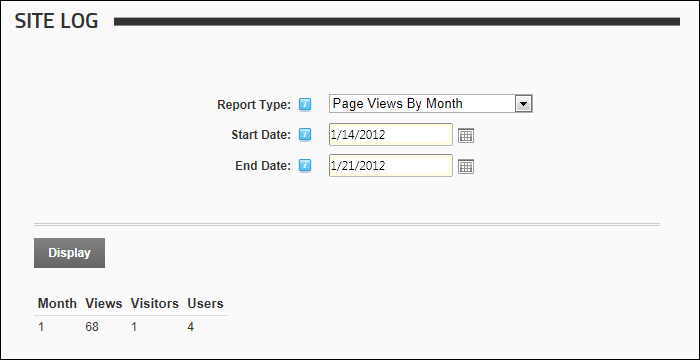

Page Views By Month Report
The Page Views By Month report displays the total number of visitors and users who viewed the site each month for the selected range of months.
Report Fields:
- Month: The number of the current calendar month. E.g. 1 = January
- Views: Number of views for the month
- Visitors: Total number of all visitors for the month
- Users: Number of visits by registered user for the month

The Page Views By Month Site Log Report